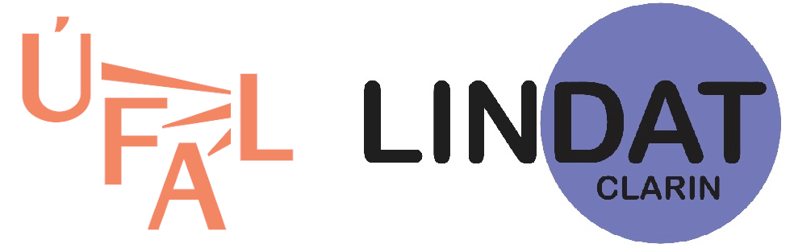

|  | Prague Dependency Treebank of Spoken Czech 2.0 (PDTSC 2.0) |
This work was funded by:
Ministry of Education, Youth and Sports of the Czech Republic: LINDAT/CLARIN project LM2015071 (LINDAT-CLARIN: Centre for Language Research Infrastructure in the Czech Republic),
Czech Science Foundation GA17-12624S: Subcategorization of Adverbial Meanings Based on Corpus Data,
Czech Science Foundation GA16-05394S: Structure of Coreferential Chains in Parallel Language Data,
Czech Science Foundation: GA17-073135S: Contextually-based Synonymy and Valency of Verbs in Bilingual Setting,
Czech Science Foundation: GA16-18177S: Integrated Approach to Derivational and Inflectional Morphology of Czech,
"Companions" project sponsored by the European Commission as part of the Information Society Technologies (IST) programme under EC grant number IST-FP6-034434,
National Science Foundation, USA, Project No. IIS-9732388 (Summer Workshop 1998 at JHU, Baltimore), and ITR Project No. IIS-0122466 (Malach).